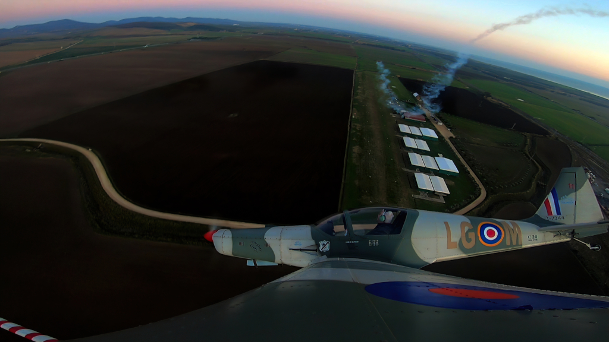

L'Aviosuperficie Gestita "Monti della Tolfa"-RM06-5, dispone di una pista in manto erboso, delle dimensioni di
650
mt x 18 mt non in pendenza e utilizzabile anche dopo forti piogge grazie alle ottime caratteristiche di
drenaggio.
L'aviosuperficie è aperta tutti i giorni dalle ore 9:00 alle 18:00
Per i velivoli che intendano raggiungerla da fuori è necessario il coordinamento e preventiva autorizzazione inviando l'apposito modulo disponibile alla sezione indicazioni ed inviarla tramite mail al gestore all'indirizzo fcecilia@aviogestioni.it o tramite whatsapp al numero +39.320.6792552
Presso la struttura sono disponibili i seguenti servizi:
- Rimessaggio: Hangar con struttura in ferro e copertura in PVC ad altissima resistenza contro gli eventi atmosferici. In ogni struttura è presente l'illuminazione,acqua ed energia elettrica fino a mezzora dopo il tramonto. Gli hangar sono forniti di servizio di derattizzazione e polizza assicurativa.
- Osteria del Volo: Un punto di ristoro per gli amici che vogliano raggiungere l'Aviosuperficie in volo o via terra e gustare le prelibatezze servite dalla cucina in un ambiente amichevole, sereno e rilassante.
- La scuola di Volo: Presso la quale si può conseguire l'attestato di pilota di velivoli VDS per Aereo (Multiassi), Elicottero (Ala Rotante) e Autogiro oppure ottenere le abilitazioni e qualifiche varie, quali trasporto del passeggero, qualifica di pilota VDS avanzato, volo in formazione, o semplicemente fare un volo di ambientamento o frequentare un corso di Sicurezza del Volo.
- I velivoli del club sono a disposizione dei propri associati, tutti i giorni della settimana, previa autorizzazione del coordinatore.
- Ufficio e sala piloti: Locale adibito in parte a sala piloti, con il simulatore di volo, le cartine aeronautiche e tutto l'occorrente per la pianificazione dei voli e per le lezioni di teoria, ed un piccolo ufficio per il direttivo.
- Sorveglianza: Sul campo è presente il servizio di guardiania continuo e un sistema di videosorveglianza con registrazione automatica.